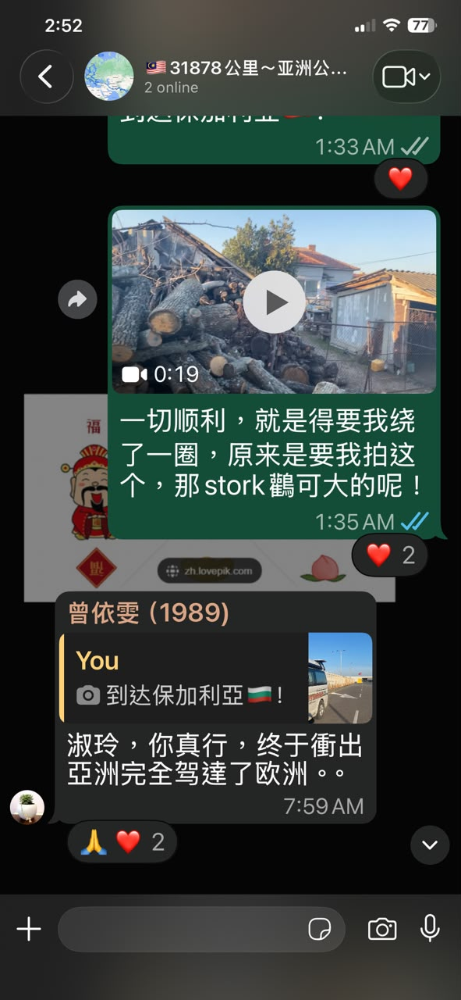

中文说明
除了家人，我也让一些朋友知道我在哪里。
这趟 solo overland journey 不是完全消失式的旅行。 除了每天向 sponsor / agent 汇报 mileage，也除了每晚向 family group 发 exact location， 我也会不定时在不同 WhatsApp groups 或给特定朋友更新自己的位置。
有时候是 daily，有时候是 weekly，有时候是不固定。 这取决于当时路况、国家、网络、时间，以及我觉得谁需要知道我现在在哪里。
这些讯息看起来很普通：一个 location、一张路上照片、一句“我到了哪里”。 可是它们连起来，就是一张 safety web。
我一个人开车，但我不是完全 untraceable。 这些 WhatsApp traces 让关心我的人知道：Toyotaki 还在路上，我还在移动，我还安全。
English Memory Summary
Solo, but held by a communication web.
Tuzi’s solo overland journey was not a disappearance. Alongside family location sharing and sponsor mileage reports, she also updated selected friends and WhatsApp groups from time to time.
These updates could be daily, weekly, or occasional, depending on the road, country, signal, and situation. Each message was small, but together they formed a wider safety web.
The journey was solo, but not isolated. The road had communication traces.
Heart Statement
一个人走，也可以让别人看见你的轨迹。
自由不是让所有人失去你的消息。 自由也可以是：我自己走，但我愿意留下线索。
I travelled solo, but I kept a web of traces behind me.